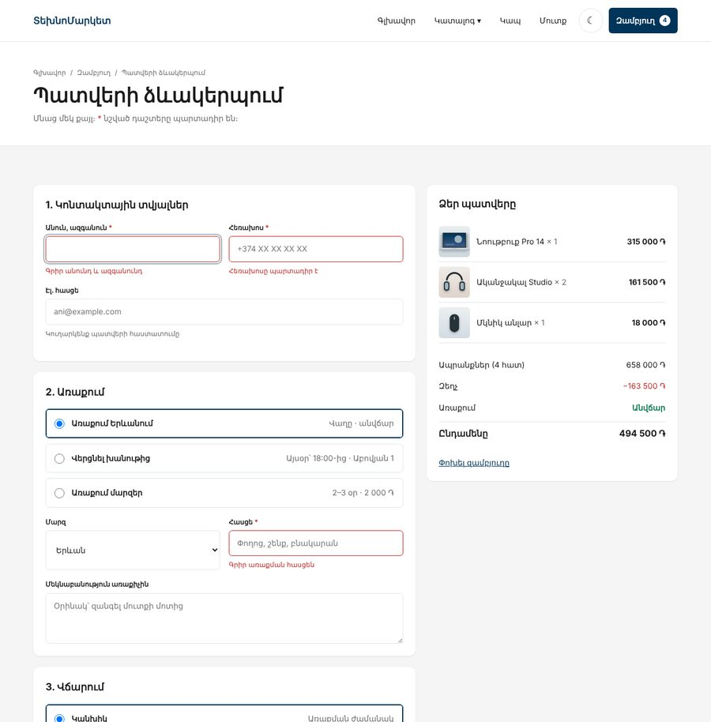
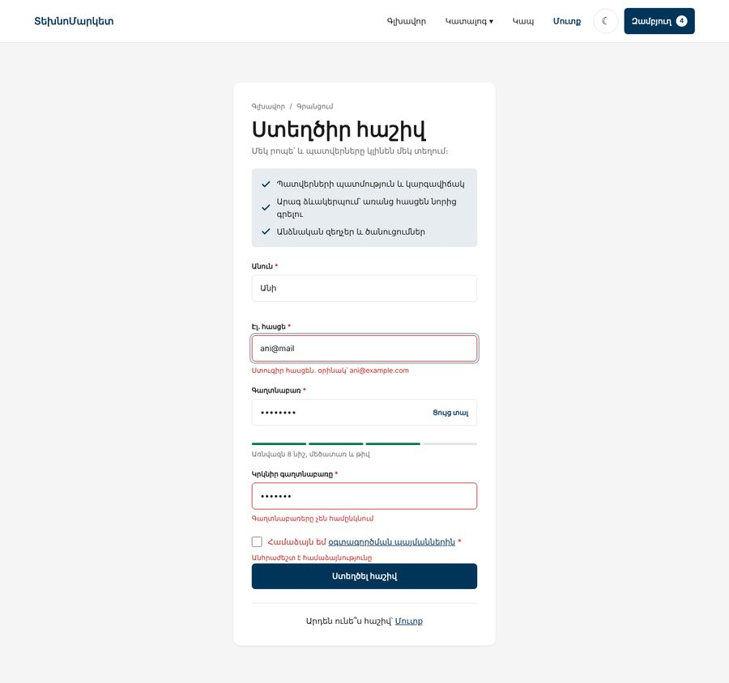
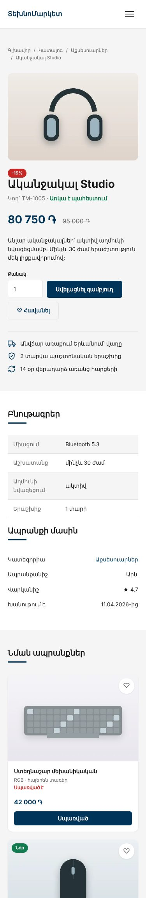
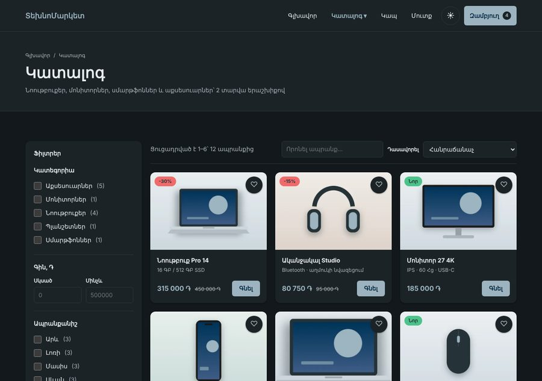

Առաջադրանք 2 / 3 · JS Դաս 17–18 · 2 դաս + տնային
Դաս 17-ում նախագիծը դնում ենք GitHub, Դաս 18-ում բաժանում ենք մոդուլների։ Միաժամանակ կենդանացնում ենք մնացած էջերը Դաս 11–15-ի գործիքներով, որոնք Առաջադրանք 1-ում դեռ պետք չէին․ ապրանքի էջը ?id=-ով, պատվերի, մուտքի և գրանցման ֆորմաների ստուգումը, թեման։
Նախագիծը դառնում է իսկական պահոց GitHub-ում, կոդը բաժանվում է մոդուլների, իսկ մնացած էջերը նույնպես կենդանանում են․ ապրանքի էջը կառուցվում է ?id=-ով, ֆորմաները ստուգում են տվյալները, թեման պահպանվում է։




Այս առաջադրանքի համար առանձին օրինակ չկա․ example-2-final-ը արդեն պարունակում է նաև Առաջադրանք 3-ը (fetch, դասեր)։ Համեմատելիս նայիր մոդուլների կառուցվածքին, pages/*.js-ին, ui/-ին և validation.js-ին։
# 1. Պահոց և առաջին commit (Դաս 17)
cd technomarket
git init
git add .
git commit -m "ՏեխնոՄարկետ՝ կատալոգ և զամբյուղ (Առաջադրանք 1)"
# 2. GitHub և Pages
git remote add origin https://github.com/ՕԳՏԱՆՈՒՆ/technomarket.git
git push -u origin main
# Settings → Pages → Branch: main
# 3. Ամեն մեծ քայլ՝ իր ճյուղում
git switch -c feature/modules
# ... աշխատանք ...
git add .
git commit -m "Կոդը բաժանված է ES մոդուլների"
git switch main
git merge feature/modules
git push.DS_Store
Thumbs.db
.vscode/
*.log
node_modules/feature/ ճյուղ․ feature/modules, feature/product-page, feature/formsՄոդուլները չեն աշխատում file://-ով (Դաս 18)։ VS Code → Live Server → Open with Live Server։ Հասցեն պիտի սկսվի http://127.0.0.1:5500-ով։
Ամեն էջ ունի մեկ սկրիպտ՝ իր մուտքի կետը։ Մնացածը այն բերում է import-ով։ Ընդհանուր մասը (header, թեմա) մեկ ֆունկցիայում է, որ ամեն էջում չկրկնենք։
<script type="module" src="js/pages/catalog.js"></script>import { initLayout } from "../ui/layout.js";
import { initCartModal } from "../ui/cart-modal.js";
initLayout();
initCartModal();pages/ → ui/ → cart.js, utils.js → data.js, storage.js։ Եթե cart.js-ը սկսի import անել ui/header.js-ից, իսկ header.js-ը՝ cart.js-ից, կստացվի օղակ (Դաս 18)։ Header-ի թիվը թարմացնելու համար թող cart.js-ը կանչի «բաժանորդների» ֆունկցիաները՝ onChange(fn)։ Նայիր օրինակի ui/header.js-ը։
Բլոկ 1-ի բուրգերը checkbox է և աշխատում է առանց JS-ի։ JS-ը ավելացնում է միայն այն, ինչ CSS-ը չէր կարող․ փակել Escape-ով և հղման սեղմելիս։
function initBurger() {
const toggle = document.querySelector(".nav-toggle");
const nav = document.querySelector(".header nav");
if (!toggle || !nav) return;
document.addEventListener("keydown", (e) => {
if (e.key === "Escape" && toggle.checked) {
toggle.checked = false;
toggle.focus(); // ֆոկուսը վերադարձնում ենք մենյուի կոճակին
}
});
nav.addEventListener("click", (e) => {
if (e.target.closest("a")) toggle.checked = false;
});
}Թեմայի կոճակը՝ header-ում, զամբյուղից առաջ։ Ընտրությունը պահվում է localStorage-ում, իսկ CSS-ում մուգ թեման աշխատում է երկու դեպքում՝ համակարգը մուգ է և օգտագործողը բաց չի ընտրել, կամ օգտագործողը ընտրել է մուգ։
@media (prefers-color-scheme: dark) {
:root:not([data-theme="light"]) { /* մուգ տոկենները */ }
}
:root[data-theme="dark"] { /* նույն մուգ տոկենները */ }<script>
// Թեման կիրառում ենք մինչև էջի նկարվելը, որ «թարթում» չլինի — JS Դաս 14
try {
const savedTheme = localStorage.getItem("tm:theme");
if (savedTheme) document.documentElement.setAttribute("data-theme", savedTheme);
} catch (e) { /* localStorage-ը անհասանելի է՝ մնում է համակարգի թեման */ }
</script>Եթե թեման կիրառենք մոդուլում, որը կատարվում է էջի բեռնումից հետո, մուգ թեմա ընտրածը մի պահ կտեսնի բաց էջ։ Այս փոքր սկրիպտը կատարվում է մինչև էջի նկարվելը։ Ինքը թեմայի կոճակը՝ ui/theme.js-ում։
?id=-ով · Դաս 15product.html?id=5։ Էջում՝ Number(new URLSearchParams(location.search).get("id"))main-ը կառուցում է JS-ը նույն markup-ով, ինչ Բլոկ 1-ի ստատիկ էջում՝ փշրանքներ, պատկերասրահ, գին, ֆորմա, բնութագրեր, նման ապրանքներ։ document.title-ը՝ ապրանքի անունով?id=999)՝ հաղորդագրություն և հղում կատալոգbutton-ներ։ Սեղմելիս փոխվում է մեծ նկարը և is-current դասը («հանել բոլորից → ավելացնել ընտրվածին», Դաս 11)#product-root-ի վրա (դելեգացիա), որովհետև ներսի ամեն ինչ ստեղծվում է innerHTML-ով if (target.dataset.action === "thumb") {
const main = root.querySelector(".gallery__main");
const { image } = target.dataset;
main.querySelector("source").setAttribute("srcset", `images/${image}.webp`);
main.querySelector("img").setAttribute("src", `images/${image}.jpg`);
root.querySelectorAll(".gallery__thumb").forEach(thumb => {
thumb.classList.toggle("is-current", thumb === target);
thumb.setAttribute("aria-pressed", thumb === target);
});
}novalidate և սխալի տեղ ամեն դաշտի տակ՝ <span class="field__error" data-error-for="phone"></span>+374 91 23 45 67 կամ 091234567), էլ. հասցե (ոչ պարտադիր, բայց եթե գրված է՝ ճիշտ), հասցե (պարտադիր, բացի «Վերցնել խանութից»-ի դեպքում), համաձայնությունblur, որսման փուլով), ուղղելիս՝ անմիջապես (input)։ Ուղարկելիս՝ բոլոր սխալները միանգամից և ֆոկուս առաջինի վրա (Դաս 13)sessionStorage-ում (համար, անուն, քանակ, գումար), զամբյուղը դատարկվում է, location.href = "thanks.html"thanks.html-ը կարդում է պատվերը, ցույց է տալիս համարը և ջնջում այն, որ թարմացնելիս չկրկնվիphone: /^(\+374|0)\s?\d{2}(\s?\d{2}){3}$/, // +374 91 23 45 67 կամ 091234567Պատվերի համարը պետք է միայն հաջորդ էջում և միայն այս ներդիրում։ localStorage-ը այն կպահեր ընդմիշտ (Դաս 14)։ Իսկական պատվերը կգնա սերվեր PHP բլոկում։
type-ը password ↔ text)data-level="0…4" ատրիբուտով, իսկ գույները՝ CSS-ումtextContent-ով (անունը օգտագործողինն է, ոչ innerHTML)Պատվերի, մուտքի և գրանցման ֆորմաները ունեն նույն showError, clearError, blur/input տրամաբանությունը։ Գրիր այն մեկ անգամ՝ validation.js-ում, իսկ էջերում թող լինեն միայն կանոնները։ Օրինակում դա createValidator(form, rules) ֆունկցիան է։
Կարճ ծանուցում՝ «հեռացվեց», «ավելացվեց հավանածներում», «քանակը՝ 1-ից 10»։ Մեկ showToast(message) ֆունկցիա ui/toast.js-ում։
| Սխալ | Ինչպես ուղղել |
|---|---|
Cannot use import statement outside a module | <script type="module"> |
CORS սխալ՝ file:// | Live Server (Դաս 18) |
Failed to resolve module specifier "utils.js" | Ուղին սկսվում է ./-ով կամ ../-ով, .js-ը պարտադիր է |
pages/catalog.js-ից import "./utils.js" չի գտնվում | Ուղին հաշվվում է ֆայլից, ոչ HTML-ից․ ../utils.js |
| Header-ի թիվը չի թարմանում ապրանքի էջում | Էջի մոդուլը չի կանչում initLayout()-ը |
| Ապրանքի էջում պատկերասրահը չի աշխատում | Listener-ը կախված է կոճակների վրա մինչև render-ը։ Դելեգացիա #product-root-ի վրա |
| Հեռախոսի ճիշտ համարը սխալ է համարվում | Ստուգիր regex-ը Console-ում․ patterns.phone.test("+374 91 23 45 67") |
| Մուգ թեմա ընտրածը մի պահ տեսնում է բաց էջ | Թեման կիրառիր head-ի փոքր սկրիպտով, ոչ մոդուլում |
type="module" սկրիպտ, var և գլոբալ փոփոխականներ չկանproduct.html?id=1…12-ը ցույց է տալիս ճիշտ ապրանքը, ?id=999՝ հաղորդագրությունvalidation.js-ում